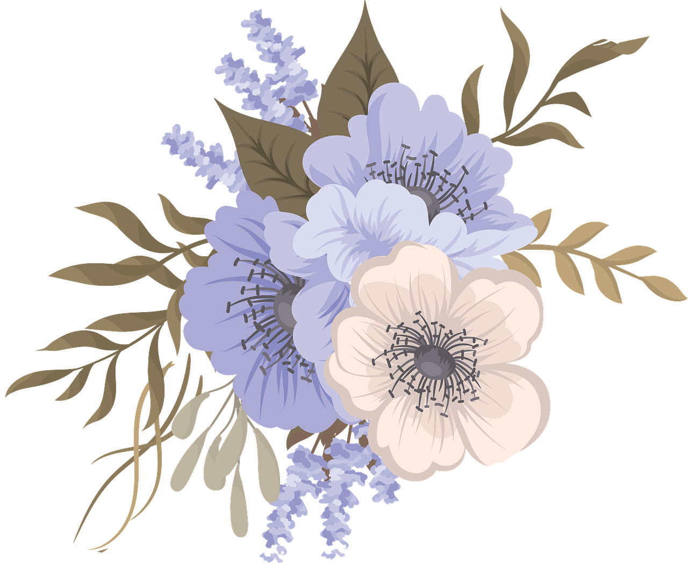

|  |
Читати модно |

|
|
У сучасному світі ритм життя 21 сторіччя набирає шаленої швидкості. |

|
Паралельно з цим набирав обертів і міф про "нудні книжки",
який виник через занепад культури читання. |
|
Проте останніми роками спостерігається нова тенденція – читати стало модно. |
Щоб розвіяти міф про "нудні книжки" та підтримати цю позитивну тенденцію,
ми підготували добірку ненудних книг у різних жанрах.
У нашій колекції ви знайдете все: від легкого чтива, що допоможе розслабитись після важкого дня,
до книг, що вивернуть навиворіт ваш мозок та вставлять його назад, змушуючи по-новому дивитися на світ.